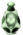
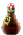

¡Ayuda al Mago!
El mago ha salido al bosque encantado a buscar 7 pociones buenas para lograr sus encantamientos.
Aunque debe tener cuidado, ya que el bosque se encuentra lleno de dragones que le quitan vida y pociones malas ,,, que te hace perder una poción buena y te resta el tiempo que el mago puede estar en el bosque.
Las pociones buenas también suman tiempo para poder seguir en su búsqueda de alcanzar su objetivo.
¡Ayuda al mago a conseguir todas las pociones antes de que se acabe el tiempo o se quede sin vidas!
Para saltar: El mago salta con la flecha para arriba ↑
Para agacharse: El mago se agacha con la flecha para abajo ↓
Las pociones buenas suman 3 segundos.
Las pociones malas: ,,, restan 5 segundos.
Los dragones restan una vida
Se empieza con 45 segundos y se puede sumar hasta 01:30
Para ganar: Se necesita recoger las 7 pociones.
El juego termina cuando, se recogieron las siete pociones o se quedo sin vidas o tiempo.
Cantidad de pociones recogidas: